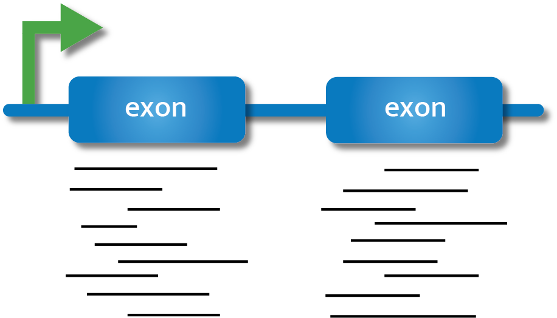

Quantifying Gene Expression

In order to draw conclusions about gene expression from our reads, we need to first identify which region of the genome reads originated from and then quantify the number of reads from that region. There are many tools available to carry out quantification, and we will not cover the arguments for and against each tool. We encourage you to carry out a literature search, and discuss with experienced individuals in your field, before committing to a particular quantification procedure. Here we will give a brief overview of two approaches with considerably different underlying methodology, give an example tool for each, and then demonstrate one tool for the purpose of progressing to the next stage of our workflow.
The first approach to read quantification involves aligning reads to the genome and then counting the number of reads that are aligned to certain genomic features (e.g., exons).
The second approach we will introduce involves creating ‘pseudocounts’. In this method, reads are not aligned to the genome. Instead, they are pseudoaligned to kmers within the transcriptome and their abundance is estimated.
In today’s workflow we will demonstrate genome alignment and counting, and will provide examples of other workflows that use pseudocounting and abundance estimation.
Alignment with HISAT2
Preparation of the genome
When carrying out alignment, the first requirement is a genome which has been indexed. Indexing is a process to organise the genome so that our alignment algorithms can match reads to the genome easily, without having to scan the entire genome.
Navigate to the Genome directory and view the contents. You should see two files, a .gtf and a .fa file. We will use the .gtf file towards the end of this episode.
cd ~/RNA_seq/Genome
ls The .gtf file (General Transfer Format) contains information about the genome, such as gene names etc., all stored in a one-line-per-feature format, while the .fa (FASTA) file contains sequence.
We will now use hisat2 to index the genome using the hisat2-build command. We will specify the number of threads (-p 4), and specify the input file (-f for FASTA file type).
# index file:
hisat2-build -p 4 -f Saccharomyces_cerevisiae.R64-1-1.dna.toplevel.fa Saccharomyces_cerevisiae.R64-1-1.dna.toplevel
lsWe can now see many new .ht2 files, which make up the indexed version of the genome.
Alignment on the genome
Now that we have an indexed genome, we can align our sequences. To do this we will need to know:
Where the sequence information is stored (e.g., fastq files).
What kind of sequencing file we have (e.g., Single end or Paired end).
Where the indexes and genome are stored.
Where the mapping files will be stored.
Once we have that information we are ready to align our sequences. First, navigate to the RNA_seq directory, and run hisat2 on the first sample. We will use the -x flag to specify the basename of the index, the -U flag to specify the comma-separated list of files containing unpaired reads to be aligned, and the -S flag to write SAM alignment output files.
cd ~/RNA_seq
hisat2 -x Genome/Saccharomyces_cerevisiae.R64-1-1.dna.toplevel -U Raw/SRR014335-chr1.fastq -S SRR014335.samOutput should look something like this:
125090 reads; of these:
125090 (100.00%) were unpaired; of these:
15108 (12.08%) aligned 0 times
88991 (71.14%) aligned exactly 1 time
20991 (16.78%) aligned >1 times
87.92% overall alignment rateNow that we have confirmed this code works for our first sample, we will use a loop to align the rest of the samples. We will make a new directory called Mapping, which we will use to store all of our mapping output files. Then navigate to the Trimmed directory and execute the for loop to align all samples.
mkdir Mapping
cd ~/RNA_seq/Trimmed
for filename in *
do
base=$(basename ${filename} .trimmed.fastq)
hisat2 -p 4 -x ../Genome/Saccharomyces_cerevisiae.R64-1-1.dna.toplevel -U $filename -S ../Mapping/${base}.sam --summary-file ../Mapping/${base}_summary.txt
doneCheck the output directory (Mapping) and see the different files that have been produced. You should see both .sam and _summary.txt files for each sample.
Let’s look at the SAM file format.
less SRR014335-chr1.samThe file begins with an optional header which is used to include human-readable metadata such as the source of the data, reference sequence, method of alignment etc.,. Following the header is the alignment section. Each line contains information corresponding to the alignment of a single read. Each alignment line has 11 mandatory fields for essential mapping information and a variable number of other fields for aligner-specific information.
Converting SAM to BAM
SAM files are tab-delimited text files containing information for each individual read and it’s alignment to the genome. SAM files are large, so the first thing we do with them is convert them to BAM files: compressed, binary versions of the file which reduce time and can themselves be indexed for efficiency when we interact with them.
We will convert the SAM file to the BAM format using the samtools program with the view command. Use the -S flag to specify the input is a SAM file, and the -b flag to specify BAM as the output.
Note that you will see a warning “fail to read the header from…”, this is normal.
for filename in *.sam
do
base=$(basename ${filename} .sam)
samtools view -S -b ${filename} -o ${base}.bam
done
lsNext we will sort the BAM files, which will mean our future steps are more efficient. From the samtools program we will use the sort command, with the -o flag to specify where the output file should go.
for filename in *.bam
do
base=$(basename ${filename} .bam)
samtools sort -o ${base}_sorted.bam ${filename}
doneMapping statistics
Using the sorted BAM file, you can now easily calculate some basic mapping statistics using the samtools flagstat command.
samtools flagstat SRR014335-chr1_sorted.bamBasic statistics shown by flagstat will be slightly different from those in the summary file generated by HISAT2 due to different “totals” that are used for comparisons. flagstat compares the number of alignments while HISAT2 compares the number of reads mapped. This is because reads can be mapped/aligned to more than one reference location, and these reads have a “primary” and “secondary” alignment (see section 1.2 of the SAM specifications). For example, the percent overall alignment in the HISAT2 summary will be equivalent to the percent primary mapped evaluated by flagstat. To get the number of reads that aligned 0 times (summary file), the equivalent statistic from flagstat would be subtracting the number of mapped reads from the number of total alignments.
MultiQC
HISAT2 output data can be incorporated into the MultiQC report. Copy the summary files generated by HISAT2 into the MultiQC directory and re-run multiqc.
Navigate to the updated report and view it in your browser.
cd ~/RNA_seq/MultiQC
cp ../Mapping/*summary* ./
multiqc .
You might notice that the report labels the summary files as “Bowtie2”. This is because the outputs are identical to those generated by Bowtie2, and MultiQC recognises them as Bowtie2.
Read summarisation
Sequencing reads often need to be assigned to genomic features of interest after they are mapped to the reference genome. This process is often called read summarisation or read quantification. Read summarisation is required by a number of downstream analyses such as gene expression analysis and histone modification analysis. The output of read summarisation is a count table, in which the number of reads assigned to each feature in each library is recorded. In our case each feature is an exon. To carry out counting we will use the featureCounts tool from the Subread package.
Navigate to the RNA_seq directory, create a new directory called Counts and cd into that directory. From there run the featureCounts command which will require five different flags. We will use the -a flag to specify the annotation file, in this case the .gtf file we noticed earlier. The -o flag names the output file (which we will call yeast_counts.txt), while the -T flag specifies the number of threads/CPUs used for mapping. The -t flag is used to control the feature type in the GTF annotation file, we will use exon (which is also the default). Finally, the -g flag specifies the attribute type in the GTF file. We will use the gene_id option (again, the default).
cd ~/RNA_seq
mkdir Counts
cd Counts
featureCounts -a ../Genome/Saccharomyces_cerevisiae.R64-1-1.99.gtf -o ./yeast_counts.txt -T 2 -t exon -g gene_id ../Mapping/*sorted.bamUpdate the MultiQC report by copying over the output data in Counts.
cd ~/RNA_seq/MultiQC
cp ../Counts/* .
multiqc .We have now generated counts! We can now take these through to the next stage of our analysis: preparing to identify differentially expressed genes.